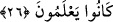

et-Te’vîlâtü’n-Necmiyye’de der ki: “Yâni azab onlara sıhhat, nimet ve sevinç
görünümünde geldi. Halbuki onlar bunların azab olduğunun farkında değildi. En büyük
sevinç birden ortaya çıkan sevinç olduğu gibi en şiddetli azab da ansızın gelendir.
Kalbe en çok acı veren ayrılık beklenmedik ayrılıktır.”
26. Bu sûretle Allah, dünya hayatında onlara rezilliği tattırdı. Âhiret azâbı daha
büyüktür. Keşke bunu bilselerdi!
“Bu sûretle Allah, dünya hayatında onlara rezilliği” zilleti ve küçüklüğü “tattırdı.”
Yâni Hak Teâlâ onlara horluğu ve rüsvaylığı tattırdı. Onu yenilen bir şeyi tadanın
hissettiği gibi hissettiler.
“Dünya hayatında” ifâdesi, bu zilletin nerede tattırıldığını açıklamaktadır. Buna
rezzillik/zillet, domuz ve maymuna dönüştürülmek, yerin dibine geçirilmek, suda
boğulmak, öldürülmek, esir ve sürgün edilmek ve bunlara benzer azab türleridir ki
bunlar daha yakın olan azaplardır.
Onlar için hazırlanan “Âhiret azâbı” çok şiddetli ve devamlı olması sebebiyle dünya
azâbından “daha büyüktür. Keşke bunu bilselerdi!” Yâni keşke onların durumu/özelliği
bilmeleri olsaydı bunu bilirler ve ondan ibret alırlardı. Allah’a ve Rasûlü’ne isyan
etmezlerdi ve kendilerini azabdan kurtarırlardı. Şu halde akıllı kimseye düşen, dünyâ ve
âhiret azâbından kurtulmak için tevbe ve inâbe ile Rabbine dönmektir.
Şiblî (k.s.)’un şöyle dediği nakledilmiştir: “Dört bin hadîs okudum. Sonra onlardan
birini seçtim. Diğerlerini bırakıp onunla amel etmeye başladım. Çünkü o hadîsi derin
derin düşündüm ve kurtuluş ve necâtımın onda olduğunu gördüm. Öncekilerin ve
sonrakilerin ilmi onda toplanmıştı. Bu hadîs şudur: Rasûlullah (s.a.) ashâbından birisine
şöyle buyurdu: “Dünyan için ancak orada kalacağın kadar çalış. Âhiretin için de
orada kalacağın kadar çalış. Allah için O’na muhtaç olduğun kadar amel işle.
Cehennem için de ona sabredebileceğin kadar amel (günah) işle.”[104]
Şu zayıf insanoğlu için cehenneme sabretmek mümkün olmadığına göre, kendisini
cehennemden uzaklaştıracak, cennetlere ve en yüce derecelere erdirecek yola girmesi
lâzımdır.
Hadiste buyurulur ki: “Ümmetimin abdâlları (büdelâ) cennete ne namazla ne de
oruçla gireceklerdir. Onlar cennete nefislerinin cömertliği, göğüslerinin her tür
kirden
uzak
oluşu
ve
müslümanların
hayrını
düşünmeleri
sâyesinde
gireceklerdir.”[105] Hepsinin temeli ise tevhîddir.
Huzeyfe (r.a.)’tan rivâyet edildiğine göre şöyle demiştir: “Rasûlullah (s.a.)’in şöyle